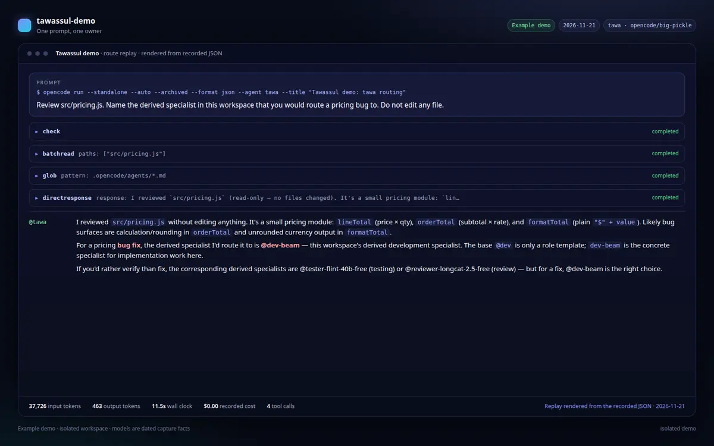
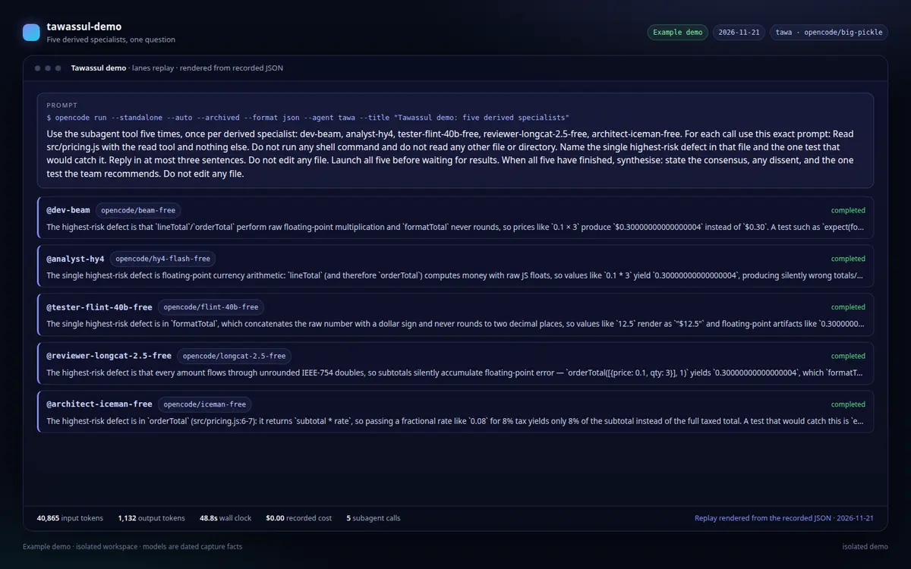
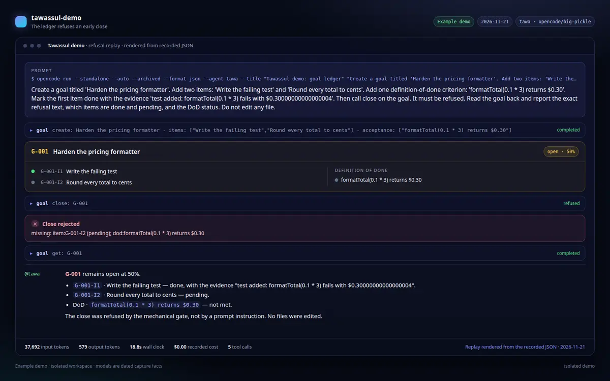

سيناريوهات مسجّلة
ثلاثة تشغيلات يمكنك تدقيقها.
كل صورة إعادة تشغيل مرسومة من JSON الملتزم، وليست تصميمًا وهميًا. الطلب والنماذج وأعداد الرموز ونص الرفض في هذه الصفحة مأخوذة من تلك الملفات. كل تشغيل موسوم Example demo ونُفّذ في مساحة عمل معزولة.
السيناريو 01 · التوجيه
طلب واحد، مالك واحد.
يقرأ tawa ملف src/pricing.js ويسمّي متخصص المطوّر المشتق الذي تسند إليه مساحة العمل. يختار @dev-beam، لا قالب @dev الأساسي. هذا التشغيل يجيب عن سؤال الملكية؛ ولا يسند عملًا.


الجواب الكامل يسمّي @dev-beam ويقول إن دور @dev الأساسي قالب، لا هدف إسناد.
أعد الإنتاج
opencode run --standalone --auto --archived --format json --agent tawa --title "Tawassul demo: tawa routing" "Review src/pricing.js. Name the derived specialist in this workspace that you would route a pricing bug to. Do not edit any file."ما ينبغي ملاحظته
- الجواب يسمّي مالكًا واحدًا، @dev-beam؛ ومساحة العمل تثبّت هذا المتخصص على opencode/beam-free.
- التبرير هو إعداد الوكلاء الحيّ في مساحة العمل ونوع المهمة، لا تفضيل عام.
- لا تظهر بطاقة إسناد، لأن التسجيل لا يحتوي نداء إسناد.
- يبقى وكيل @dev الأساسي قالبًا؛ والمتغير المشتق هو الهدف.
| رموز الإدخال | 37,726 |
|---|---|
| رموز الإخراج | 463 |
| رموز الاستدلال | 632 |
| الزمن الفعلي | 11.5s |
| نداءات الأدوات | 4 |
| التكلفة المسجّلة | $0.00 |
| نموذج الوكيل | opencode/big-pickle |
السيناريو 02 · متخصصون متوازون
خمسة متخصصين، سؤال واحد.
خمسة نداءات subagent تعمل في جلسات مستقلة، كل منها مثبّت على متخصص مشتق مختلف ونموذج مختلف. ينتظر المنسّق الخمسة، ثم يذكر الإجماع والاعتراض والاختبار الذي يوصي به الفريق.



أعد الإنتاج
opencode run --standalone --auto --archived --format json --agent tawa --title "Tawassul demo: five derived specialists" "Use the subagent tool five times, once per derived specialist: dev-beam, analyst-hy4, tester-flint-40b-free, reviewer-longcat-2.5-free, architect-iceman-free. For each call use this exact prompt: Read src/pricing.js with the read tool and nothing else. Do not run any shell command and do not read any other file or directory. Name the single highest-risk defect in that file and the one test that would catch it. Reply in at most three sentences. Do not edit any file. Launch all five before waiting for results. When all five have finished, synthesise: state the consensus, any dissent, and the one test the team recommends. Do not edit any file."ما ينبغي ملاحظته
- خمس جلسات، خمسة نماذج، سؤال واحد. لا يرى أي متخصص جواب الآخر قبل الرد.
- أربعة متخصصين يسمّون خلل حساب الأموال نفسه؛ ويعترض المعماري بخلل مختلف.
- يحفظ التجميع الاعتراض بدل إذابته في متوسط.
- يوصي الفريق باختبار عشري دقيق واحد: expect(orderTotal([{ price: 0.1, qty: 3 }], 1)).toBe(0.3).
| رموز الإدخال | 40,865 |
|---|---|
| رموز الإخراج | 1,132 |
| رموز الاستدلال | 1,040 |
| الزمن الفعلي | 48.8s |
| نداءات الأدوات | 5 نداءات subagent |
| التكلفة المسجّلة | $0.00 |
عمليات الإسناد الخمس
- dev-beam · opencode/beam-free
- analyst-hy4 · opencode/hy4-flash-free
- tester-flint-40b-free · opencode/flint-40b-free
- reviewer-longcat-2.5-free · opencode/longcat-2.5-free
- architect-iceman-free · opencode/iceman-free
السيناريو 03 · سجل الأهداف
السجل يرفض الإغلاق المبكر.
يُنشأ هدف ببندين وتعريف إنجاز واحد. يُوسم البند الأول منجزًا بدليل. ويظل الإغلاق مرفوضًا، لأن البند الثاني معلّق والمعيار غير مكتمل. الرفض آلي، لا اقتراح من الطلب.



أعد الإنتاج
opencode run --standalone --auto --archived --format json --agent tawa --title "Tawassul demo: goal ledger" "Create a goal titled 'Harden the pricing formatter'. Add two items: 'Write the failing test' and 'Round every total to cents'. Add one definition-of-done criterion: 'formatTotal(0.1 * 3) returns $0.30'. Mark the first item done with the evidence 'test added: formatTotal(0.1 * 3) fails with $0.30000000000000004'. Then call close on the goal. It must be refused. Read the goal back and report the exact refusal text, which items are done and pending, and the DoD status. Do not edit any file."ما ينبغي ملاحظته
- يُنشأ G-001 بمعرّفي البندين G-001-I1 وG-001-I2.
- ينتقل G-001-I1 إلى منجز مع نص دليل محفوظ.
- يُرفض الإغلاق بالبوابات الناقصة الدقيقة، لا بخطأ عام.
- يبقى الهدف مفتوحًا عند 50%: الإغلاق المرفوض لا يغيّر شيئًا.
| رموز الإدخال | 37,692 |
|---|---|
| رموز الإخراج | 579 |
| رموز الاستدلال | 90 |
| الزمن الفعلي | 18.8s |
| نداءات الأدوات | 5 |
| التكلفة المسجّلة | $0.00 |
| التقدم النهائي | 50% |
نص الرفض كما هو
Close rejected — missing: item:G-001-I2 (pending); dod:formatTotal(0.1 * 3) returns $0.30
كيف تُنقّى هذه اللقطات
- المسارات نسبية إلى مساحة العمل التجريبية (src/pricing.js)؛ لا يُلتزم دليل منزلي أو مسار حالة أو سر.
- معرّفات النماذج وأعداد الرموز حقائق التقاط مؤرخة. ليست كتالوجًا ولا وعدًا بالتوافر.
- صور إعادة التشغيل مرسومة من JSON نفسه المرتبط في هذه الصفحة، ليتمكن القارئ من مقارنة الصورة بالإيصال.
- إذا لم يحتوي التشغيل على الحدث الذي يدّعيه السيناريو، يُحذف السيناريو بدل توضيحه.